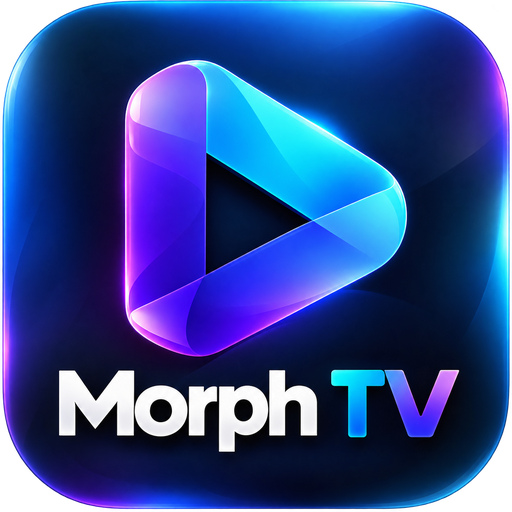

Morph TVConnected
Today

AL AHLY SC • EST. 1907
القاضيه ممكن
الأهلي فوق الجميع
AL AHLY · CAIROMAKE YOURSELF AT HOME
Less searching.
More watching.
Your favourite places, one click away.
Your favourites
Ready when you are.MAKE IT YOURS
Your apps
Open an app, or select + to pin it to Home.
No matching apps. Try another search.
EVERYTHING CONNECTED
Inputs & TV
Your devices. Your channels. One place.
Choose a source
Reading TV inputs…
JUST THE WAY YOU LIKE IT
Settings
Personal settings, saved on this TV.
Time & weather
Look & feel
MORPH TV 0.8.68Developed by Karim Aboushousha & Hassan Shehata